限界を拒め
『VALORANT（ヴァロラント）』は、Riot Gamesが開発した5対5のタクティカルFPS。
グローバルな競技の舞台で、自らのプレイスタイルと経験が試される。
精密な射撃と戦術的なアビリティーを駆使して、アタックとディフェンスの各13ラウンドを戦い抜け。
ラウンド中のリスポーンは無い。生き残るためには、相手よりも素早く思考する必要がある。
コンペティティブモードとアンレートモード、さらにデスマッチとスパイクラッシュで強敵に挑もう。

最高の相棒
プレイヤーは固有アビリティを持つ「エージェント」と呼ばれるキャラを選択します。
各エージェントは以下の4つのロールに分類される


デュエリスト
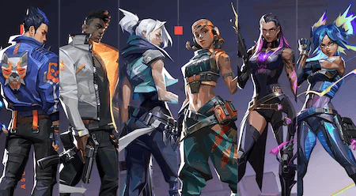素早く交戦してキルを重ねる、頼れる戦場ムードメーカー
デュエリストは正面からの撃ち合いを有利にできるアビリティを持っており、キル性能やエントリー・クリアリングに優れたロールです。 積極的に戦闘へ関わることでチームや試合に貢献することができますが、その反面、自分のエイム力の高さが活躍度に直結することになる点には要注意。 また、激しい戦闘の中でアビリティを臨機応変に使い分ける判断力も必要なので、戦線の押し引きを見極められる冷静さも重要になります。
強み
弱み
イニシエーター
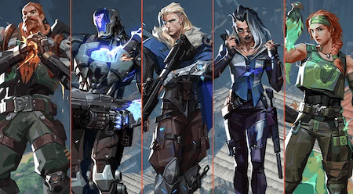闇に潜む敵をあぶりだし、逃げ場を狩る影の実力者
イニシエーターは敵の位置を見つけ出す索敵アビリティやフラッシュなどの妨害アビリティを活用し、味方が攻撃を行うための起点を作り出すロールです。 重要性の高いアビリティを豊富に持っているものの、単独での生存能力は決して高くないので味方と行動を共にしてカバーし合うことが必要不可欠。 また、アビリティを適切なタイミング・場所で使うことが貢献度に直結することもあり、マップ構造や戦術などの豊富な知識が必要となります。
強み
弱み
コントローラー
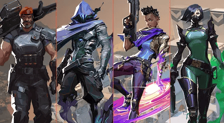すべてを読み切る分析眼でチームを勝利に導く、逆転を生み出す戦略のエキスパート
コントローラーは視界を長時間遮断できるスモークをエリアに設置し、敵の視界や射線を妨害することで味方の侵攻や防衛をサポートするロールです。 スコアに直接反映されないものの、有効なスモークを設置できるか否かで試合の勝敗が左右される超重要なポジションであり、攻撃・防衛の要となります。 また、スモークはキャラによって範囲や持続時間、設置方法など性能が異なるのでマップによる使い分けも大切です。
強み
弱み
センチネル
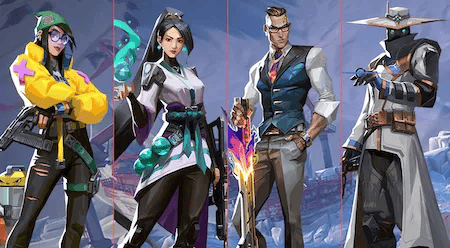敵の先を読み制圧力でねじ伏せる、鉄壁の戦線戦略核
センチネルは設置型の索敵アビリティや足止めに適したアビリティで、広いエリアを防衛・管理するロールです。 敵の行動を抑制することに長けたアビリティを豊富に持つのでディフェンダー側で活躍しやすい一方、攻めに活用できる手段をほぼ持たない点には要注意。 特に1人で戦うことが難しいため、味方との連携や敵の行動を先回りして抑制する状況判断能力が重要になります。
強み
弱み
アーセナル
プレイヤーは「アーセナル」と呼ばれるゲーム内通貨で見た目を変更可能な武器を購入することができる。 自分に合った武器や好きな見た目の武器で確実に勝利を勝ち取ろう。

サイドアーム

主にサイドアームは補助武器（2本目の銃）として使われます。 単発火力は高くないものが多く、メイン武器に比べると強力とは言い難い下位互換の武器種となっています。 しかし、価格が安く（無料の武器もある）、 スナイパーやショットガンなど性能が尖ったメイン武器を使う場合は補助武器として 一役買うこともある点は覚えておきましょう。
主な購入タイミング
サブマシンガン

サブマシンガンはメイン武器としては比較的低価格で購入できる。 1発あたりのダメージ量が低いが連射力を持っている。 単発火力が低いというのは、VALORANT のような体力の少ないゲームでは不利に作用するため注意が必要。
主な購入タイミング
ショットガン

メイン武器としては比較的低価格で購入できる。 1発あたりのダメージ量は高いが、拡散率が高いため近距離がメインレンジとなってしまう。 単発火力が高いということは、VALORANT のような体力の少ないゲームでは有利に作用する。 しかし、拡散率が高いため中距離～遠距離レンジでは火力が出しにくい点に注意が必要。
主な購入タイミング
アサルト

メイン武器として強力な武器である。 1発あたりのダメージ量は高く、連射性能も高い。 しかも近距離・中距離・遠距離とどのレンジでも使いやすく汎用性が高い。 VALORANT ではメイン武器といえばアサルトというほど主流な武器種です。 単発火力が高く、連射性能も高いため、体力の少ない VALORANT では強力な武器種となっている。 しかし、汎用性が高い分突出した特徴がないため、その他武器種の突出した性能に劣る部分もある点に注意が必要。
主な購入タイミング
スナイパー

メイン武器として強力な武器。 1発あたりのダメージ量は高いが、単発射撃で、遠距離がメインレンジとなる。 サイト倍率が高い。 単発火力が高いということは、VALORANT のような体力の少ないゲームでは有利に作用する。 しかし、連射力に欠けるため、近距離レンジでは当てる自体がことが困難な点に注意が必要。
主な購入タイミング
マシンガン

メイン武器として強力な武器。 連射性能が高く、マガジン装填数が多い。 貫通力が高く壁抜きに使われる。 マシンガンはその名前の通り、連射性能とマガジン装填数に優れたメイン武器。 単発火力は高くないですが、突出した連射性能により強力な武器種となっている。 壁抜きなどマッチ局所での使用を主としますが、装填数の多さから低ランク帯では猛威を振るうことも散見される。 射撃感の特徴としては、撃ち始めが遅く、徐々に連射速度が上がっていく、拡散率が高く照準通りに初弾が飛んで行かないという点が挙げられる。
主な購入タイミング
最高の相棒
プレイヤーは固有アビリティを持つ「エージェント」と呼ばれるキャラを選択します。
各エージェントは以下の4つのロールに分類される
アンレート
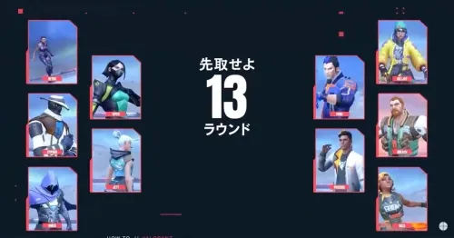5vs5のチーム戦で行われる爆破ルール
アンレートとは、5対5で行われるチーム戦でありヴァロラントの基本となるゲームモードです。 アタッカーとディフェンダーに分かれ、ラウンド開始時やキル達成などで獲得できる「クレジット」を使用して武器や アビリティを購入し、各陣営に設定された勝利条件を達成したチームが そのラウンドの勝者となります。
コンペティティブ
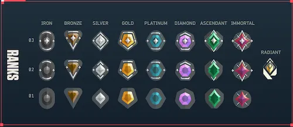ランクマッチ形式の「アンレート」
コンペティティブは「アンレート」のルールに加えて、ランクシステムとオーバータイムが採用されているゲームモードです。 自身の実力に沿ったプレイヤーとマッチングするので、キャラごとの立ち回りやマップ研究など高度な戦術とプレイスキルが求められる真剣勝負を楽しむことができます。
スイフトプレイ
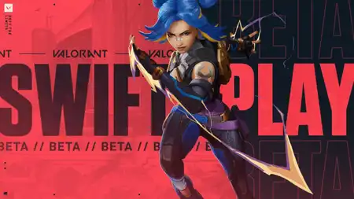ラウンド数が約半分になったアンレート
スイフトプレイとは、5ラウンドで勝敗が決まる簡易版のアンレートモードです。 基本ルールはアンレートと同じですが、ラウンドの勝敗を問わずクレジットを一定量獲得することができるので、実戦形式でのセットアップ練習や特定武器の練習などを行うことができます。
スパイクラッシュ
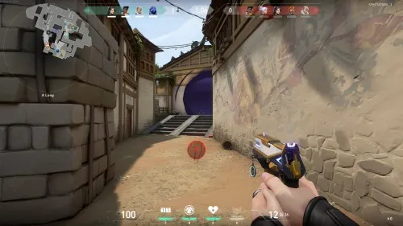アタッカー全員がスパイクを持つラッシュモード
スパイクラッシュは、「アンレート」ルールを基本として1試合8〜12分ほどで決着をつけることができるカジュアルモードです。 4ラウンド先取で勝利となっているだけでなく、購入フェーズがない代わりにプレイヤー全員が同じランダムな武器を持った状態で開始され、ラウンドごとにアビリティとシールドが全回復するのでクレジット管理を考える必要もありません。
デスマッチ
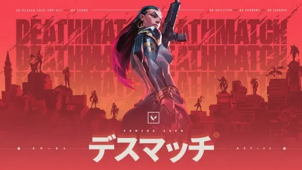自分以外が全て敵となるFFAモード
デスマッチは、自分以外の全てのプレイヤーが敵となり「誰よりも早く勝利条件(40キル達成)を満たしたプレイヤー」が勝者となるFFA(フリー・フォー・オール)形式のモードです。 マネーシステムはありませんが、武器は自由に変更することができるので、得意な武器を選んで真剣に勝利を狙うも良し。苦手な武器の扱いを習熟するための「実戦練習」として没頭するのも良いでしょう。
チームデスマッチ
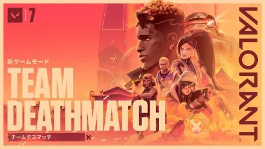アビリティを駆使してチームで戦うデスマッチモード
チームデスマッチは、制限時間以内に合計キル数が100になったチームが勝者となるカジュアルモードです。 デスマッチとは異なり、ゲームの進行度に応じて変化する「ステージ段階」によって使用可能な武器が変化し、また各キャラの「アビリティ」も使用できるので、個人技を磨くための「実戦練習場」としてプレイするのも良いでしょう。
レプリケーション
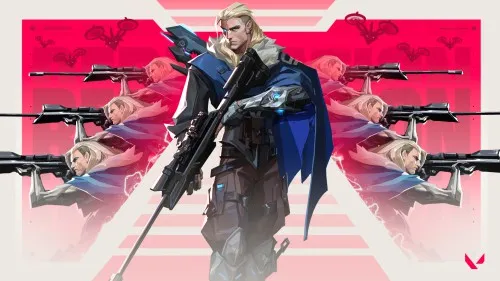チーム全員が同じキャラを使用するスパイクモード
レプリケーションは、「アンレート」ルールを基本として同じチームのプレイヤー全員が同じキャラを使用する特殊モードです。 プレイヤーは試合開始前にそれぞれ使用したいキャラに投票を行い、その中でも最も投票数が多かったキャラが選出されます(同数の場合はランダム)。 また、購入する必要があるのは武器とシールドのみ。アビリティはラウンドごとに自動補充される仕様となっています。
エスカレーション
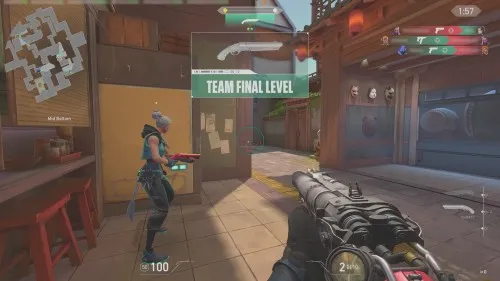次々と交換される武器で戦うカジュアルモード
エスカレーションは敵をキルすることでエスカレーションレベルを進めていき、最終段階であるレベル12を先に完了したチームが勝者となるカジュアルモードです。 エスカレーションレベルはチーム全体で共有しているので個人で活躍をせずとも進めていくことができ、またレベル12を完了せずとも10分経過した時点でリードしているチームの勝利となるので覚えておきましょう。
マップ
プレイヤー同士の戦場となるマップは深く理解しておかなければならない。 たかがマップでもマップごどにそれぞれ色がある。優秀なプレイヤーはどんなマップにも柔軟に対応して、 その場で作戦を立て臨機応変に対応しなければならない。 どのマップにも我が家のように理解を深めなければならないのだ。
アセント

次々と交換される武器で戦うカジュアルモード
アセントはサイトの入り口が狭く、スモーク抜きや角待ちでやられてしまうことが多いため、 エントリー時にフラッシュを入れてデュエリストの補助をできると良い。 アセントはミッドが両方のサイトと近いため、メインとミッドでの挟撃が起こりやすいマップだ。 そのため、マーケットやAショート付近にトラップを仕掛けられる「キルジョイ」や「サイファー」が必須となっている。 Bサイト中からBメインをオーディンやシェリフなどの貫通力高の武器で壁抜きができるので、 リコンアビリティを持つ「ソーヴァ」や「フェイド」がいると一方的に大ダメージを狙うことができる。
ロータス

次々と交換される武器で戦うカジュアルモード
ロータスは必須級のキャラがいないので、他のマップと比べて構成の自由度が高い。 ただし、ロータスは基本的にAメインかCメインでぶつかり合いが起こるので、 最低限戦闘に参加できるキャラかサポートできるキャラは編成したい。 スモークとカーテンの2つを利用して少しずつエリアを広げていくのがプロチームの主流だ。 しかし、VCT2024Championsを優勝したEDG(エドワードゲーミング)は、 カーテンなし2コントローラー、センチネルなしという、珍しい構成を使用していた。
ヘイヴン

次々と交換される武器で戦うカジュアルモード
ジェットは「テイルウィンド」と「アップドラフト」を使用することで、 すべてのサイトの箱の上にエントリー可能となっていて、バックサイトにいる敵を強襲できる。 ヘイヴンで重要な「Aショート」と「ガレージ」を取得する際に、死角となる箇所が多く存在するため、 ドローンアビリティが必須となっている。 ヘイヴンはロングレンジやラウンド開始前から乗っておくことができる強力なオフアングルがあり、その位置でオペレーターの運用ができると試合を有利に進めることができる。
バインド

次々と交換される武器で戦うカジュアルモード
バインドでよく使用されているデュエリストは「レイズ」だが、比較的どのデュエリストも強力なので、 使い慣れたデュエリストをピックするのがおすすめだ。 バインドのテレポーターはテレポートした際に音が鳴るのだが、 その音がヨル本人かデコイかわからないため相手を惑わすことができる。さらにBロングでは強力なフラッシュがあり、 ヨルはバインドにおいては採用も視野に入ってくる。 ただし、ヨル自体の運用の難しさがあるため、慣れないうちは無理に使う必要はない。 ドローンアビリティは強力だが、バインドであればレイズの「ブームボット」やゲッコーの「ディジー」で補えるため、 必須ではない。 しかし、スカイはドローンアビリティの「トレイルブレイザー」の他に、 「ガイディングライト」がフラッシュと索敵の2つの用途で使用できるため、狭所の多いバインドでは採用されることが多い。
スプリット

次々と交換される武器で戦うカジュアルモード
スプリットはサイトの入り口が狭く、中途半端なエントリーだと簡単に止められてしまうため、エントリーを成功させるために、突破力の高いデュエリストを編成するのがよい。 スプリットは高低差が激しいマップとなっていて、高台に登ることで予想していない位置から強襲を仕掛けることが可能になる。 スプリットのミッドは、相手の情報やサイトへのローテートを早くすることができるので、非常に重要なエリアとなっている。そのため、壁を設置して相手の動きを抑制できるキャラを入れるのもひとつの手段だ。
サンセット

次々と交換される武器で戦うカジュアルモード
サンセットは比較的どのデュエリストも強力なので、使い慣れたデュエリストをピックするのがおすすめ。 無理して使えないキャラを使うよりも使い慣れたキャラを使用した方が、安定したパフォーマンスが出せる。 サンセットは広いミッドエリアと入り組んだ通路が組み合わさった構造をしているため、ミッドを確保した側がラウンドを有利に運びやすくなるマップだ。 スモークキャラは攻守共にミッドへスモークを置いてあげると、敵に情報を取らせない立ち回りが可能なため、積極的に行っていきたい。 サンセットは通路だけでなくサイト内も入り組んだ構造をしているため、お手軽に索敵ができるキャラが有用となる。 特にサンセットは角待ちを行えるポイントが多いため、索敵やフラッシュアビリティの優先度が高くなっている。
フラクチャー

次々と交換される武器で戦うカジュアルモード
フラクチャーは比較的どのデュエリストも強力なため、使い慣れたデュエリストをピックするのがおすすめだ。 フラクチャーのマップの構造と「ブリーチ」の壁越しにアビリティを使える特性が非常に噛み合っているため、フラクチャーをプレイする際はブリーチを構成に入れることが望ましい。 フラクチャーは射線が通る場所が多いため、基本的には同時に3つのスモークを展開できる「ブリムストーン」が採用されている。ただし、カーテンアビリティを所持する「ヴァイパー」や、強化後の「アストラ」も選択肢に入ってくるため、コントローラーの自由度は高い。
アビス

次々と交換される武器で戦うカジュアルモード
セキュリティ、ブリッジ側からの射線を切れる設置 タワーからの射線には注意 メインから解除阻止ができるが、メイン左側からだと大きく体を出さないといけないので注意が必要。 ブリッジ側の射線が切れないが、メインからより解除阻止がしやすい。 オープン設置かつ解除阻止もしやすい。 その分あらゆる射線が通るので、完全にサイトをエリア取りできていない場合は非常に危険である。
アイスボックス

次々と交換される武器で戦うカジュアルモード
アイスボックスでは、Aサイト、Bグリーン、ミッドで最初の交戦ポイントになりやすい。 アイスボックスはサイトやメインの通路が入り組んでおり、クリアリングが重要なマップだ。そのため、 索敵アビリティを持ったキャラがいると非常に進行がしやすくなる。 アイスボックスは通常のスモークでは隠しきれない場所があるため、 広い範囲の射線をきることができるカーテンアビリティを持ったキャラクターが必須となる。 特に「ヴァイパー」は「ポイズンクラウド」でミッドのコントロールもできるので、アイスボックスでは非常にピック率が高くなっている。
パール

次々と交換される武器で戦うカジュアルモード
パールは屋根がほとんどないため、上にフラッシュを投げることでサイト中全体をブラインド状態にすることができる。 また、アートにある小窓から、「ゲッコー」のディジーや「スカイ」のガイディングライトのようなフラッシュアビリティを入れて、アート進行を援護できる。 パールのBサイトは防衛側の射線が通る場所が多く、スモークアビリティでは射線をすべて切るのは難しいため、カーテンアビリティを持つ「ハーバー」や「ヴァイパー」も コントローラーの候補に上がってくる。 また、ハーバーはカスケードでBロングのエリアを広げることができる点も優秀だ。
ブリーズ

次々と交換される武器で戦うカジュアルモード
ブリーズのホールはメタルドアからAサイトに入れるだけでなく、防衛スポーンからBサイトに繋がっているため非常に重要なエリアとなっている。そのため、 「サイファー」や「チェンバー」のトラップが非常に強力となってくる。 「キルジョイ」はトラップの可動範囲やアルティメットの効果範囲が、ブリーズの広大なマップ構造と噛み合わないため、ピックされることは少ない。 ブリーズはマップが広大で、基本的に撃ち合いが遠距離になるため、オペレーターを持てる「ジェット」や「チェンバー」がいると攻守共に有利に試合を進めることができる。
初心者向けポイント
初心者はまず座学！用語を覚えよう
🔗 公式サイト
詳しくは VALORANT公式サイト を見てくれ。 がちで全部載ってるぞ。